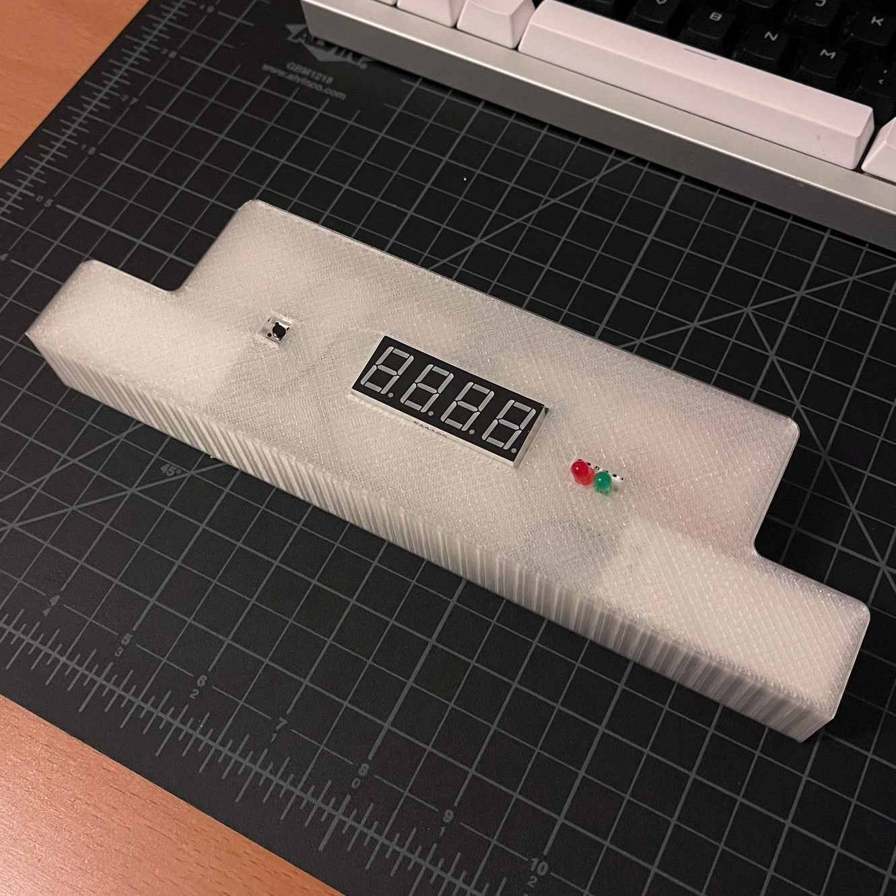

Once again, time is a construct.
I've been solving Rubik's cubes for too many years but I still don't own a stackmat timer, so I wanted to make one.
Essentially, you touch 2 capacitive sensors and hold them down for 0.55 seconds, you let go to start the timer, solve your cube, and then touch the sensors again to stop the timer.
You can see these timers in action with this little compilation of old 3x3 world records.
Essentially, there's the seven segment display for the timer, 2 capacitive sensors, a reset button, and 2 indicator LEDs hooked up to an Arduino Mega.
The four-digit seven segment display is wired from this tutorial.
The voltage drop across green/red LEDs is 1.8V, and the pins supply 5V.
5V - 1.8V = 3.2V
So with V = IR (ohm's law) and 20 mA of current:
3.2V = 0.02A * R
R = 160Ω (or more)
I opted to use 220Ω resistors since that's the closest
stock resistor in the kit that is greater than 160Ω.
I also used 220Ω resistors for each of the digit pins on the 7 segment display because they're red LEDs.
I used two 1MΩ resistors for the capacitive sensors because according to the documentation they're the
resistance to use for absolute touch activation, which is what I needed.
And I used a 10kΩ resistor for the button because it's a fairly large resistor and I used it for past assignments.
The main body of the code is mostly adapted from someone who made a stackmat timer with an LCD display.
It mostly just involves using switch cases to move between the phases of the timer.
The code used for the actual timer is adapted from an example in the sevseg library, except I changed it
to display hundredths of a second instead of tenths of a second.
// Initializing seven segment library
#include "SevSeg.h"
// Initializing seven segment object
SevSeg sevseg;
// Initializing capacitive sensor library
#include <CapacitiveSensor.h>
// Defining capacitive sensor pins
// Left sensor send pin
int sendPinL = 48;
// Left sensor receive pin
int receivePinL = 22;
// Right sensor send pin
int sendPinR = 26;
// Right sensor receive pin
int receivePinR = 50;
// Defining 2 capacitive sensors (L & R)
// sensorL with send and receive pins as defined above
CapacitiveSensor sensorL = CapacitiveSensor(sendPinL, receivePinL);
// sensorR with send and receive pins as defined above
CapacitiveSensor sensorR = CapacitiveSensor(sendPinR, receivePinR);
// Defining button pin
int buttonPin = 53;
// Variables for LED pins
// Red LED pin
int red = 8;
// Green LED pin
int green = 10;
// Variables for the timer
// Stores when timer starts
long startTime = 0;
// Stores how long user has held down both sensors
long holdTime = 0;
// Stores the final time after timer stops
float finalTime = 0;
// Calibration variables
// Variable for left sensor value
long L = 0;
// Variable for right sensor value
long R = 0;
// Left sensor minimum
int lMin = 1023;
// Left sensor maximum
int lMax = 0;
// Left sensor minimum
int rMin = 1023;
// Left sensor maximum
int rMax = 0;
// Defining case names
enum {
MODE_IDLE,
MODE_PREPARE,
MODE_READY,
MODE_TIMING,
MODE_STOP
} modes;
// Variable to hold mode
int currentMode = MODE_IDLE;
// Setup code, runs one time
void setup() {
// for my own sanity when I have to rehook wires to pins
// digit pins are T1, T4, T5, B6
// byte digitPins[] = {T1, T4, T5, B6};
// byte segmentPins[] = {T2, T6, B4, B2, B1, T3, B5, B3};
// Turning off autocalibration for the left sensor
sensorL.set_CS_AutocaL_Millis(0xFFFFFFFF);
// Turning off autocalibration for the left sensor
sensorR.set_CS_AutocaL_Millis(0xFFFFFFFF);
// Seven segment variable definition
// The number of digits used on the display
byte numDigits = 4;
// Pins that control the digits
byte digitPins[] = {29, 3, 2, 5};
// Pins that control the segments
byte segmentPins[] = {43, 44, A3, A6, A7, 42, A2, A4};
// Resistors are on the digit pins
bool resistorsOnSegments = false;
// I used a common cathode display
byte hardwareConfig = COMMON_CATHODE;
// False is what was recommended in the example starting code
bool updateWithDelays = false;
// I didn't want leading zeros in the time
bool leadingZeros = false;
// I kept the decimal point on
bool disableDecPoint = false;
// Starting a new sevseg with all the above paramters
sevseg.begin(hardwareConfig, numDigits, digitPins, segmentPins, resistorsOnSegments,
updateWithDelays, leadingZeros, disableDecPoint);
// Sets the brightness of the display
sevseg.setBrightness(90);
// Pinmode for button + lights
// Setting button pin to input
pinMode(buttonPin, INPUT);
// Setting red LED pin to output
pinMode(red, OUTPUT);
// Setting green LED pin to output
pinMode(green, OUTPUT);
// Starting serial for debugging
Serial.begin(9600);
// Calibration
// Turns green light on
digitalWrite(green, HIGH);
// While less than 3 seconds haven't passed
while (millis() < 3000) {
// Store left sensor reading
L = sensorL.capacitiveSensor(5);
// Store right sensor reading
R = sensorR.capacitiveSensor(5);
// If the stored values of L and R are greater than their maximum
if (L > lMax && R > rMax) {
// Set left maximum to current reading
lMax = L;
// Set right maximum to current reading
rMax = R;
}
// If the stored values of L and R are less than their minimum
if (L < lMin && R < rMin) {
// Set left minimum to current reading
lMin = L;
// Set right minimum to current reading
rMin = R;
}
}
// Turn off green light to signal end of calibration
digitalWrite(green, LOW);
}
// Loop code to run forever
void loop() {
// Serial stuff to help debugging
// Serial.print(sensorL.capacitiveSensor(5));
// Serial.print(":");
// Serial.println(sensorR.capacitiveSensor(5));
// Conditional that checks if left sensor is touched
boolean touchL = sensorL.capacitiveSensor(5) > (lMax / 2);
// Consitional that checks if right sensor is touched
boolean touchR = sensorR.capacitiveSensor(5) > (rMax / 2);
// Starting the switch cases
switch (currentMode) {
// Defining the idle case
case MODE_IDLE:
// Serial debugging
Serial.println("IDLE");
// Green light turns off
digitalWrite(green, LOW);
// If both sensors are touched
if (touchL && touchR) {
// Red light turns on
digitalWrite(red, HIGH);
// Storing time at which sensors were touched
holdTime = millis();
// Changes into prep mode
currentMode = MODE_PREPARE;
}
// Breaks out of the case
break;
// Defining the prep case
case MODE_PREPARE:
// Serial debugging
Serial.println("PREP");
// If both sensors are touched
if (touchL && touchR) {
// Red light turns on
digitalWrite(red, HIGH);
// Collects the current time
long now = millis();
// If both sensors have been held for .55 seconds
if (now - holdTime > 550) {
// Green light turns on
digitalWrite(green, HIGH);
// Changes into ready mode
currentMode = MODE_READY;
}
}
// Breaks out of the case
break;
// Defining the ready case
case MODE_READY:
// Serial debugging
Serial.println("READY");
// If both sensors are not touched (user lets go)
if (!(touchL && touchR)) {
// Stores the time user lets go
startTime = millis();
// Mode changes to timing
currentMode = MODE_TIMING;
}
// Breaks out of the case
break;
// Defining the timing case
case MODE_TIMING:
// Serial debugging
Serial.println("TIMING");
// Turns off the red light
digitalWrite(red, LOW);
// Timer variable
static unsigned long timer = millis();
// Variable to store how many hundreds of a second have passed
static int hunSeconds = 0;
// If both sensors are touched
if (touchL && touchR) {
// Store the number of hundredths of seconds that have passed (final time)
finalTime = hunSeconds;
// Change the mode to stop
currentMode = MODE_STOP;
}
// If both sensors are untouched (or only one is)
else {
// If the time that has passed is greater than 10ms
if (millis() - timer >= 10) {
// Add 10 (ms) to the timer variable
timer += 10;
// Increment the hundredths of a second
hunSeconds++;
}
// Display the number of hundredths of a second that have elapsed, with 2 decimal places
sevseg.setNumber(hunSeconds, 2);
}
// Refreshing the seven segment display
sevseg.refreshDisplay();
// Breaks out of the case
break;
// Defining the stop case
case MODE_STOP:
// More serial debugging
// Serial.print("Final:");
// Serial.println(finalTime);
// Turn on the red light
digitalWrite(red, HIGH);
// Set the final time on the seven segment display with 2 decimal places
sevseg.setNumber(finalTime, 2);
// Refresh the seven segment display
sevseg.refreshDisplay();
// If the button is pressed
if (digitalRead(buttonPin) == HIGH) {
// Reset the timer variable
hunSeconds = 0;
// Blank the seven segment display
sevseg.blank();
// Switch to idle mode
currentMode = MODE_IDLE;
}
// Breaks out of the case
break;
}
}
Above are the front and back (top and bottom?) of the circuit. The wiring leaves much to be desired, but it does the job.
A lot of the wiring involved me clipping the resistor and LED legs, and pressing the resistors down so they'd lay as flat as possible.
Investing in breadboard wires without the plastic ends was definitely a good move, though.
I 3D printed the case after modeling it in Onshape.
I frantically added the cutout for the arduino data cable at the last second right before printing,
and unfortunately didn't realize until after it printed that I put it on the wrong side, so I had to rewire my circuit.
It's not the prettiest case, but I was going for first-try print success more than anything else, given the time constraints.
Maybe I should invest in some calipers... how else do people measure these things?
(I use a tiny ruler, but it proves to not be the most accurate thing in the world.)
The capacitive sensors are aluminum foil taped underneath the case and attached to wires bent around the 1MΩ resistors.
The video demo is here!
As seen in the video, the green light turns on for the first 3 seconds for the initial calibration period,
so I touch the sensors a couple times. Then the red light turns on when the sensors are touched,
and the green light also turns on after 0.55 seconds have elapsed. The green light stays on while timing
and the red light turns on when the timer is stopped. And then the reset button is pressed so I can do it all over again!
Overall, I had fun making this!
I think if I were to do it again or continue iterating on it, I'd: